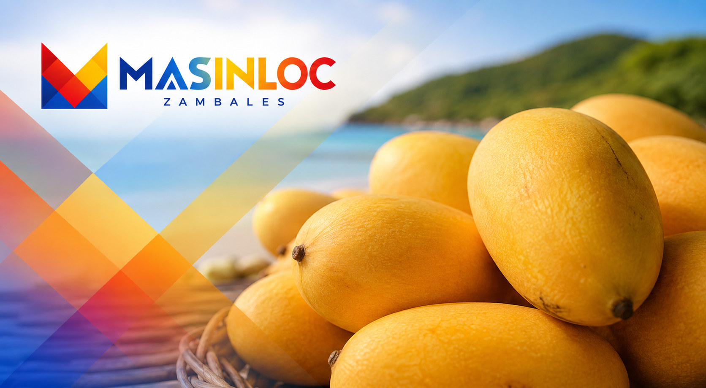

Food and local flavors
The Sweetest Mango Came From Where, Exactly?
Zambales has a documented Guinness association with mango sweetness. Masinloc also has a separate 23-percent-sugar test. The internet often collapses those two facts into one claim.

Two mango facts are repeatedly fused online. One is a 1995 Guinness citation associated with Zambales and the Sweet Elena carabao mango. The other is a 2013 report that mangoes grown in Masinloc measured 23 percent total soluble sugar. Both are worth recording. They are not the same test, the same date or automatically the same fruit.
What is documented
The variety is Sweet Elena, a carabao mango grown in Zambales, and it was cited in the Guinness Book of World Records in 1995 as the world's sweetest. That much appears in Philippine government reporting on the province's mango industry and is the solid ground everything else stands on. Zambales, the province, has a Guinness association for mango sweetness dating to 1995.
The same government reporting connects Sweet Elena with Santa Cruz, a municipality at the northern end of the province. That is the strongest town-level attribution currently available from a source of that standing.
What Masinloc can document
In 2013, the Philippine Daily Inquirer reported a Department of Agriculture official's account of mangoes grown in Masinloc testing at 23 percent total soluble sugar after the 15th National Mango Congress. That is direct evidence for exceptional sweetness in Masinloc fruit. It does not identify the tested grower or connect that 2013 measurement to the 1995 Guinness citation.
What is claimed but not established
Contemporary Masinloc retellings, often naming San Salvador Island, connect the record fruit to this town. The claim deserves to be preserved as an attributed local tradition, especially now that a separate 2013 test confirms unusually sweet Masinloc mangoes. It still needs evidence from the 1995 record before the two can be joined.
What has not been located is a document tying the 1995 Guinness citation specifically to San Salvador or Masinloc: no Guinness entry naming the barangay, no agriculture record from that award period, and no contemporaneous 1995 report identifying the grower and town. The later DA-reported sugar test is evidence for Masinloc fruit, not a missing page from the earlier citation.
Two things can be true at once: Masinloc grows exceptional mangoes, and the specific Guinness claim has not been documented for Masinloc.

Why leave it unresolved
Because the alternative is to pick the flattering version and publish it, which is how the confusion started. A town that documents its food history carefully ends up with something more valuable than a claim: a record that other people can cite. A town that repeats an attractive story until it hardens into fact ends up with something that collapses the first time a researcher checks.
So the position of this article is precise. Zambales carries the 1995 Guinness association; Sweet Elena is the named variety, and the strongest current government attribution points to Santa Cruz. Masinloc fruit has a separately reported 23-percent sugar measurement, while local retellings connect San Salvador to the older record. The specific 1995 link remains unverified.
Sources & further reading
- Zambales celebrates thriving mango industryPhilippine News Agency
- Sta. Cruz municipal profileZambales Provincial Tourism
- Zambales mango remains sweetest, says DA officialPhilippine Daily Inquirer